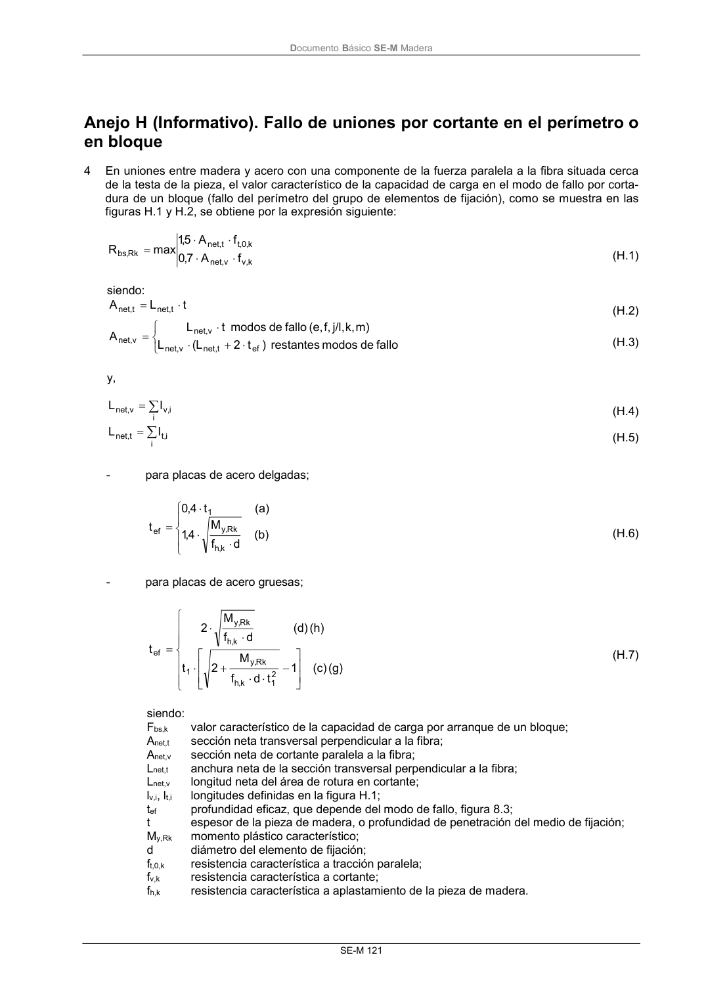

DB-SE-M · Anejo H (Informativo). Fallo de uniones por cortante en el perímetro o en bloque · versión 2019-12-20
SHA256: 26b5819839ebfda78b0b119c5e76a0a37773b0d763c05688541870075df93718 · página física 127 de 132 · métodos de encabezado
solo si están cotejados.
Documento · ← p. 126 · p. 128 →
Formatos: Markdown · JSON de bloques · PDF p. 127 · imagen PNG
Documento Básico SE-M Madera
SE-M 121
Anejo H (Informativo). Fallo de uniones por cortante en el perímetro o
en bloque
4
En uniones entre madera y acero con una componente de la fuerza paralela a la fibra situada cerca
de la testa de la pieza, el valor característico de la capacidad de carga en el modo de fallo por corta-
dura de un bloque (fallo del perímetro del grupo de elementos de fijación), como se muestra en las
figuras H.1 y H.2, se obtiene por la expresión siguiente:
k,v
v,
net
k,
0
,t
t,
net
Rk
,
bs
f
A
7,0
f
A
5,1
max
R
(H.1)
siendo:
t
L
A
t,
net
t,
net
(H.2)
fallo
de
modos
restantes
)
t
2
L
(
L
m)
k,
j/l,
f,
(e,
fallo
de
modos
t
L
A
ef
t,
net
v,
net
v,
net
v,
net
(H.3)
y,
i
i,v
v,
net
l
L
(H.4)
i
i,t
t,
net
l
L
(H.5)
-
para placas de acero delgadas;
(b)
d
f
M
4
,1
(a)
t
4
,0
t
k,h
Rk
,y
1
ef
(H.6)
-
para placas de acero gruesas;
(g)
(c)
1
t
d
f
M
2
t
(h)
(d)
d
f
M
2
t
2
1
k,h
Rk
,y
1
k,h
Rk
,y
ef
(H.7)
siendo:
Fbs,k
valor característico de la capacidad de carga por arranque de un bloque;
Anet,t
sección neta transversal perpendicular a la fibra;
Anet,v
sección neta de cortante paralela a la fibra;
Lnet,t
anchura neta de la sección transversal perpendicular a la fibra;
Lnet,v
longitud neta del área de rotura en cortante;
lv,i, lt,i
longitudes definidas en la figura H.1;
tef
profundidad eficaz, que depende del modo de fallo, figura 8.3;
t
espesor de la pieza de madera, o profundidad de penetración del medio de fijación;
My,Rk
momento plástico característico;
d
diámetro del elemento de fijación;
ft,0,k
resistencia característica a tracción paralela;
fv,k
resistencia característica a cortante;
fh,k
resistencia característica a aplastamiento de la pieza de madera.
